Capturas reales del juego
Galería
Así se ve MIAU Adventure en acción. Usa las flechas, los puntos o desliza con el dedo.
Carrusel de capturas
-
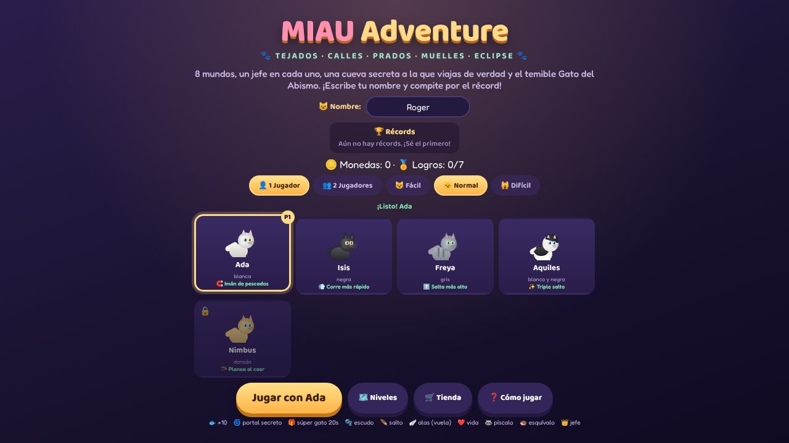
Menú principal: se elige el modo de juego, el gato, la dificultad y el mundo inicial. -
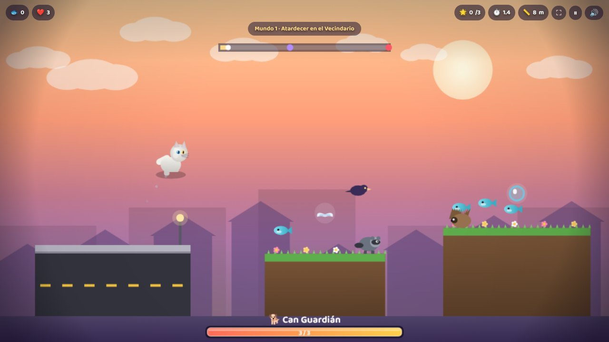
Mundo 1, Atardecer en el Vecindario: el primer recorrido entre casas y jardines. -
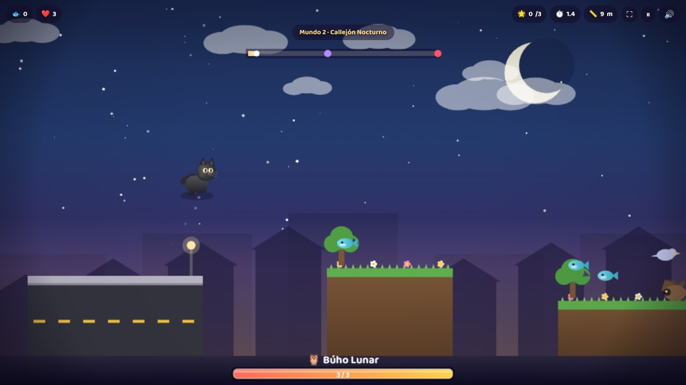
Mundo 2, Callejón Nocturno: el barrio de noche, con más enemigos. -
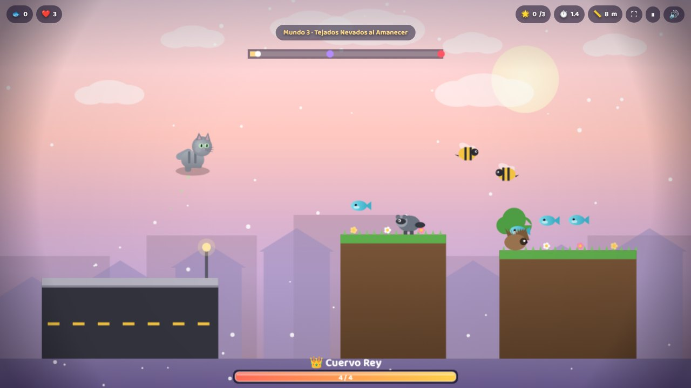
Mundo 3, Tejados Nevados al Amanecer: saltos entre techos cubiertos de nieve. -
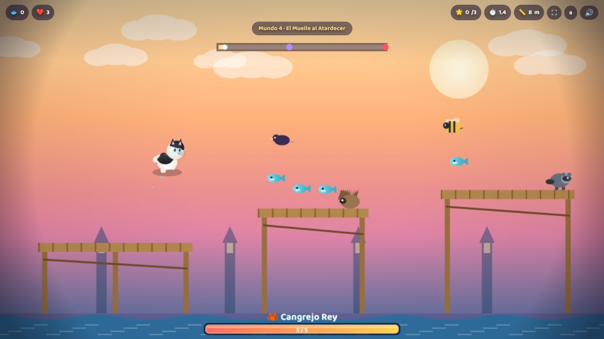
Mundo 4, El Muelle al Atardecer: plataformas de madera sobre el mar. -
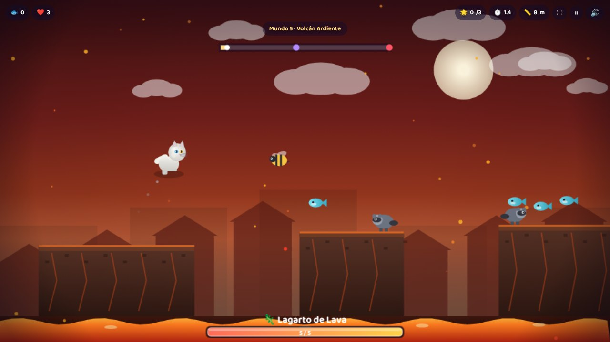
Mundo 5, Volcán Ardiente: rocas y lava en el camino. -
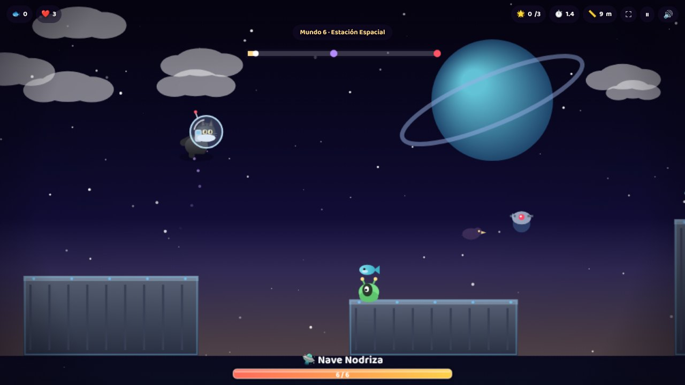
Mundo 6, Estación Espacial: gravedad baja, aliens y drones. -
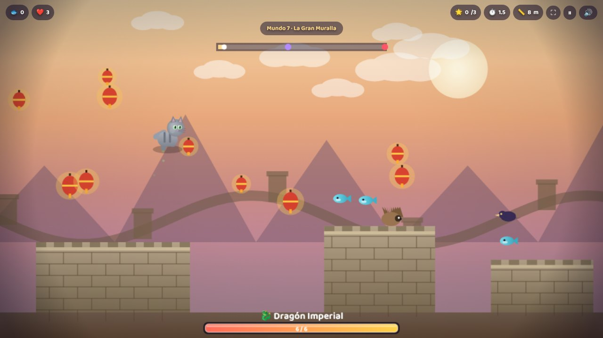
Mundo 7, La Gran Muralla: faroles y montañas al atardecer. -
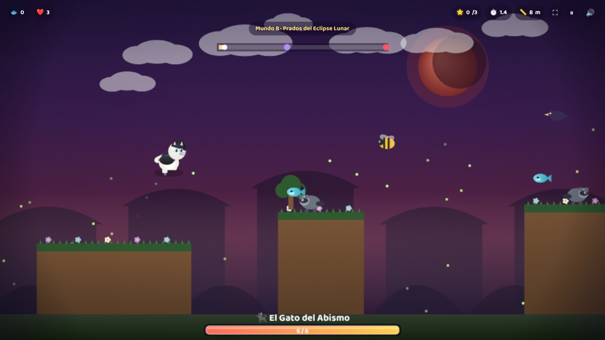
Mundo 8, Prados del Eclipse Lunar: el último mundo antes del jefe final. -
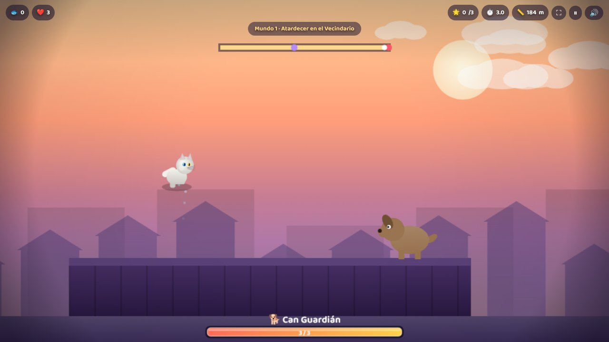
Pelea contra un jefe, con su barra de vida en la parte superior. -
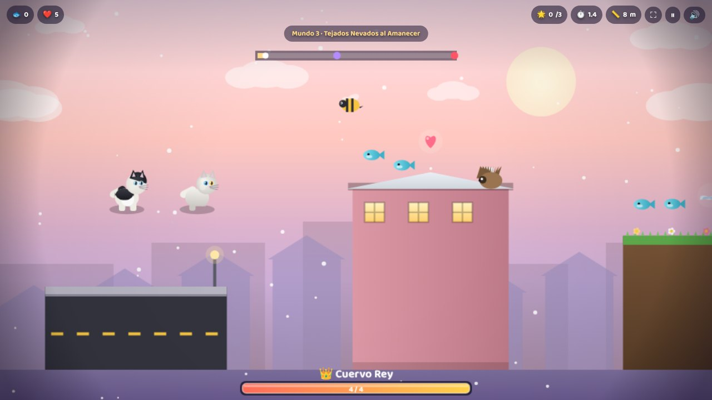
Modo de dos jugadores: dos gatos en la misma pantalla. -
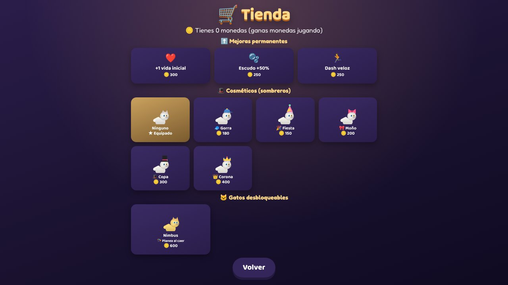
Tienda: mejoras, sombreros y la gata Nimbus a cambio de monedas.
Todas las imágenes
Haz clic en una miniatura para verla en grande.